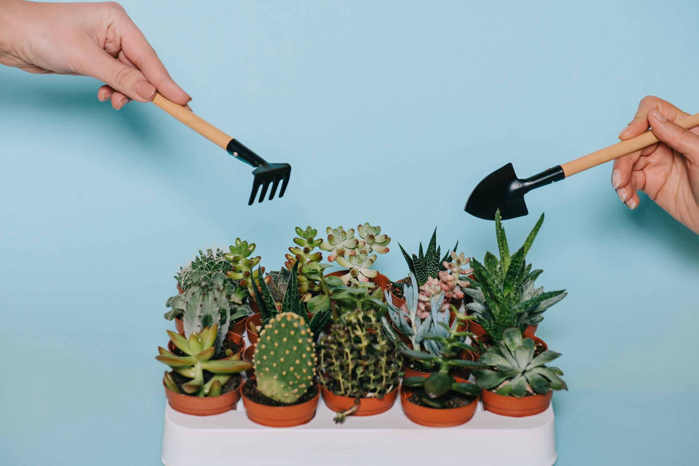

Cara Merawat Kaktus Hias

1. Gunakan media tanam yang tepat.
2. Jangan terlalu sering menyiram kaktus.
3. Pastikan kaktus diletakkan di tempat kering dan jangan terkena sinar matahari langsung.
4. Pemberian pupuk yang rutin untuk kaktus.
5. Pergantian pot.
Cara Merawat Sukulen
1. Pilih Pot yang Bawahnya Berlubang.
2. Persiapkan Media Tanamnya.
3. Simpan di Tempat yang Tidak Terkena Cahaya Matahari Langsung.
4. Siram Setiap 1 atau 2 Minggu Sekali.
5. Gunakan Moisture Meter .
6. Beri Pupuk Secara Berkala.
7. Pastikan Tidak Ada Air yang Mengendap pada Daun.